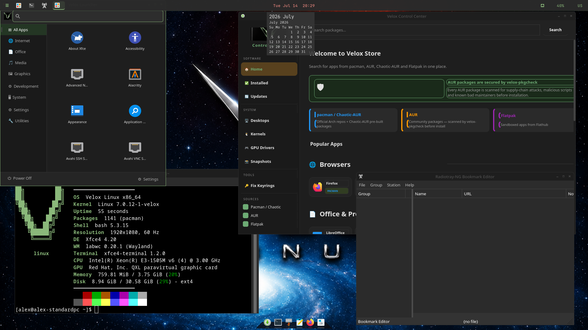
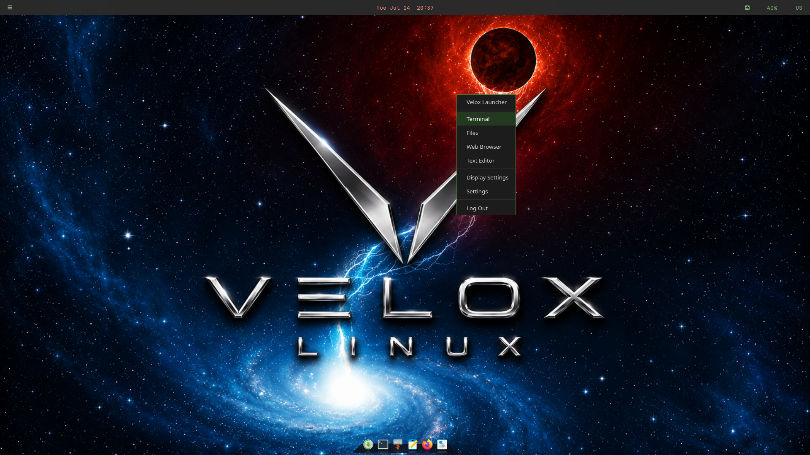

Lightweight, fast, and fully Wayland. labwc compositor with a waybar top panel, Crystal Dock bottom dock, and nwg-drawer app launcher — all styled with Velox dark-green colors.


XFCE on Velox replaces the standard xfce4-panel (which doesn't anchor properly on Wayland) with a purpose-built stack for a clean, responsive Wayland experience.
labwc is a lightweight wlroots-based Wayland compositor that handles window management, keybindings, and the right-click desktop menu. It uses the Openbox theme format — Velox ships a custom Velox-Dark labwc theme with green hover highlights.
waybar replaces xfce4-panel for Wayland compatibility. It's launched with GTK_THEME=Adwaita to prevent the system GTK theme from overriding the custom CSS. The bar uses Velox dark background with #8ab87a green for all module icons and indicators.
Crystal Dock provides the bottom application dock with a glass-style appearance. Configured with 6 launchers, Velox neon green active indicators, and a near-black transparent background. Restricted to XFCE sessions only via OnlyShowIn=XFCE; so it doesn't appear on KDE or Cinnamon.
nwg-drawer provides a full-screen app grid launcher, invoked from the waybar launcher button. Themed with GTK_THEME=Fluent-grey-Light for a clean contrast against the dark desktop.
labwc controls the desktop right-click menu via menu.xml. The Velox-Dark theme applies green hover highlights — the theme file lives at labwc/themerc (not openbox-3/themerc) which is required for labwc 0.20+.
GTK apps use Fluent-Velox-Dark set via GTK_THEME environment variable — the most reliable method for Wayland sessions. Icons use the Newaita pack with custom Velox-green folder overrides in a local Newaita-Velox theme layer.
Technical reference for the colors and components used across the XFCE desktop.